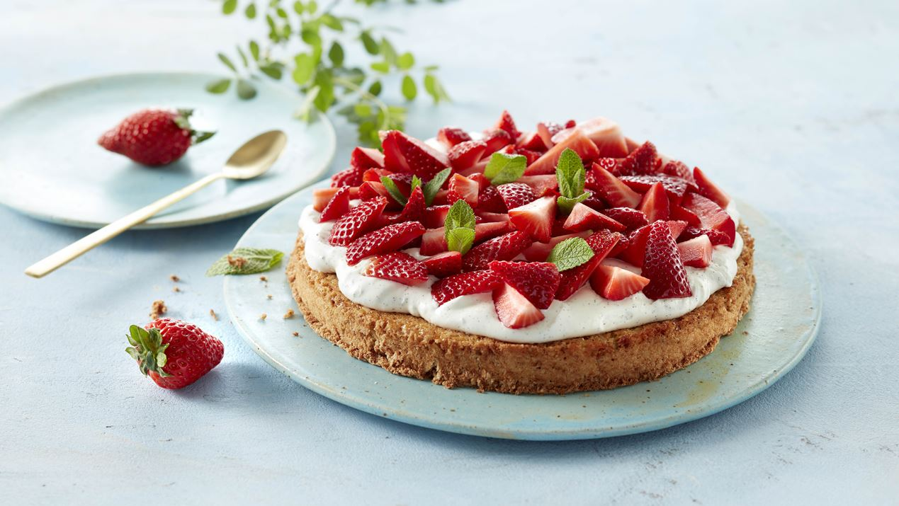

Jordbærkage

Jordbærkage er lækkert du finder fandme ikke en bedre kage end en Jordbærkage og hvis du gør så lyver du :D
Ingredienser
Mandelbund
- 3 æg
- 175g sukker
- 1/4tsk groft salt
- 175g finthakkede mandler
Vaniljecreme
- 1 vaniljestang
- 1 og en halv spsk flormelis
- 1dl creme fraiche 38%
- 1/4liter piskefløde
- 250g rensede jordbær i kvarte
Pynt
Sådan laver du en selv!
Mandelbund
- Pisk æg, sukker og salt til en luftig æggesnaps. Vend mandlerne heri.
- Spænd et stykke bagepapir fast mellem ringen og bunden af en springform (ca. 22 cm i diameter) - smør siderne.
- Fordel dejen jævnt i formen og bag bunden ca. 35 min. ved 175° - traditionel ovn. Lad den køle helt af i formen på en bagerist.
- Fjern ringen og vend kagen direkte ud på serveringsfadet med bunden op af - træk bagepapiret af.
Vaniljecreme
- Flæk vaniljestangen, skrab vaniljekorn ud og bland dem med flormelis for at få vaniljekornene skilt ad.
- Kom vaniljeflormelissen i en skål sammen med cremefraiche og piskefløde. Pisk blandingen til et fast skum.
- Fordel vaniljecremen på den afkølede mandelbund.
- Læg jordbærrene herpå og pynt jordbærkagen med mynteblade.
Oprindelig opskrift fra Arla
Lidt om mig :D
Gå til toppen